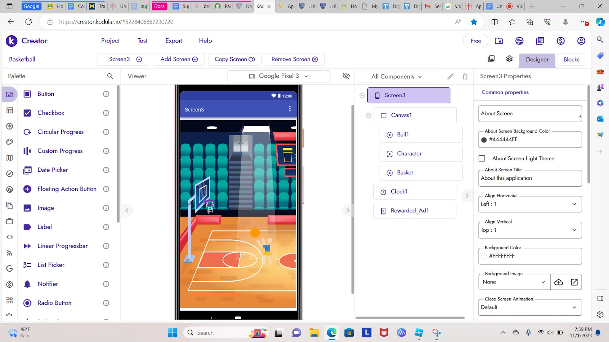

Explore the Heart of my Innovation
"Braddy! Ven la comida ya está." "Wait one second Mami." Three hours later, I had finally completed my invention: the Spiderman web shooter! I immediately grabbed some rubber bands to attach the mini tube to my arm. I extended my hand as if I were Spiderman, and the pen shot out, hitting the wall with a satisfying thump. I pulled back on the string, bringing the pen back to my hand like I was Thor. It worked! "Braddy!" I don’t respond but jolt downstairs, eager to show my family my new gizmo. My mother has always been supportive of my creativity, whether it was making a cardboard robot or creating my own math problems at the age of 7. Four years later, she still encouraged my creative thinking. I proudly presented my family with the web shooter, shooting out the pen as I had done before. "Wow! Qué bueno," my face lit up. It felt like a success, my first real achievement. I've been chasing the euphoric feeling of a challenge ever since. I was stumped, trying to figure out the error I made while coding. I could've sworn that I set the motor to turn while I held the button, so why wasn't it working? "Alright, class is over!" Mrs. Paul Shultz exclaimed. I began packing away the materials, still pondering where I had gone wrong with the programming. That's it, I decided. I'm coming back after school to finish this project. Although it was only the first day, I couldn't wait to work on the project. I had some ideas and didn't want to lose them. I started troubleshooting the code, wondering if I could reorder the commands to make the motor turn. It realized that I had commanded the motor to a full stop after a set amount of time. I couldn't believe I had overlooked such a critical detail. I recalled a recent basketball practice, dribbling down the court as I attempted a eurostep to my left. "Wrong approach, try again!" my coach yelled. My frustration grew. Why couldn't I master this move? What was I doing wrong? I kept dribbling down the court, repeating the move over and over like an everlasting computer program. Each time I tried, I was sent back to try again, and the more I attempted it, the more determined I became to get it right. “Okay, let's test this again”, I snapped out of my trance, eager to complete the project. I plugged the microcontroller into the Chromebook once more, and the motor turned a perfect 90 degrees. My hands shook, and my eyes widened. I felt alive again, that same feeling I had experienced as a 7-year-old. Conquering a challenging task and pushing my boundaries fueled my desire to explore my creativity further. I aspire to apply my innovation to the frontier of AI.

Top Innovations
RubberBand Helicopter
.png)
The Rubberband helicopter was one of my first ever innovations that had actually worked. I had created it at about 11 years old, and I was truly proud of my work. The job wasn't easy and it took a bit of time, but I stuck with it and finished the project. The project itself wasn't for anybody other than myself. I had found the project to be quite enticing which I why I decided to develop the gizmo. I found the concept of spiderman itself cool, and wanted to create something that could mimic the crusader in some way. I ended up building it using a g-2 pilot pen and utilized a string attached to the pen to build its shooter. It almost worked as a cattapult where the spring would hold the pen and the cap would be used as some sort of button.
Compost encourager
.png)
The question of why students decide not to compost at times, can go back to many general reasons that we have seen in the past: composting by hand can be very tedious, finding an area to compost near your community is difficult to find, separating the compost from the trash efficiently, and having to deal with the odor of the compost. All of these issues can be seen as huge impacting factors on students' decision whether or not they would like to compost, so to combat these issues me and my friends decided to build a device that would encourage students to compost more effectively and combat the tediousness involved with composting. The device used a capacitive sensor to determin the electromagnetivity of an object and if the object was below or above a certain threshold, the device would tell the students 'good job' for composting correctly or 'try again' for composting incorrectly.
Compost encouraging website
.png)
I made this website my senior year of high school. I wanted to find a way to market the work I had done on the compost encourager. So I decided to market my device by utilizing a web development software called "replit" and used html, css, and javascript to build the website. I found the website to be quite useful in my marketing strategy and useful while presenting in big events such as the national grid competition. Although I wasn't able to complete the website I implemented ideals such as an API and other elements of that sort. Click on the picture to navigate to the website yourself!
Microchip project
.png)
This project was made using a microchip device. In this project, I utilized a microchip coding software that allowed me to code the microchip to my liking. I had wanted to make a project that had resembled pin ball to a certain extent and in doing so I made a two person game that allowed you to play pin ball against one another. The game was pretty simple in which you would take both microcontrollers, and use its buttons to turn the servo motors to about 90 degrees. A wooden ball would be placed in the middle and both player would attempt to hit the ball using the arms on the project to kick it into the others players goal. The first person to 10 goals would be the winner. I found the project to be enticing and one of the first projects where I could develop a physical game using software.
Photo Gallery
Discover the beauty of creativity when given time and thought.
.png)
Making a light switch using fusion 360
.png)
Cattapult
.png)
Robotic Claw
.png)
code for kodular project game

Kodular app released on android
.png)
Rubberband helicopter(7th grade city fair)
.png)
architectural project
.png)
roblox game in 5th grade